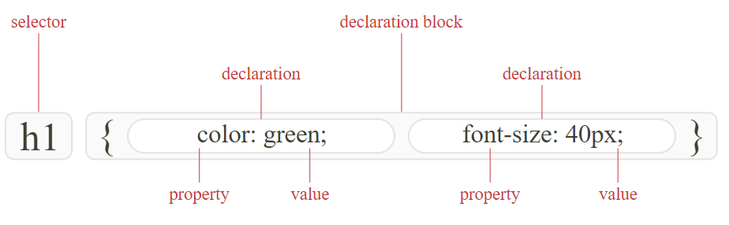

HTML
- HTML is responsible for creating the structure of a webpage.
- Elements in HTML can be used to add text, images, headers, and lists to web pages.
- The head element contains information about the webpage.
- The body element represents the visible content shown to the user.
- The '< header >' appears at the top of the page and usually contains a navigation menu and/or introductory content.
- Elements that are nested inside other elements are called child elements
- In semantic HTML elements, the name of the element describes its content and the role it plays on a webpage.
- The words “element” and “tag” are commonly used interchangeably
- An element refers to the entire element from opening tag to closing tag, whereas a tag refers only to what appears inside the angle brackets.
- use heading tags in order from h1 to h6, the order matters especially for accesibility
- h1 should only appear once on each page.
- The '< footer >' appears at the bottom of the page and usually contains the author, copyright, contact, sitemap, and navigation.
- semantic HTML elements indicate the role of their content
CSS:
- CSS stands for Cascading Style Sheets and is used to control the presentation and styling of HTML elements on a web page.
- External CSS: It is best practice to separate CSS code from HTML by using external CSS files, which can be linked to HTML documents using the tag.
- Selectors: CSS uses selectors to target HTML elements for styling. Selectors can be based on element names, class names, IDs, attributes, or combinations of these.
- Declarations contain two important components: the CSS property we want to apply and the value of the property. For example, the declaration color: blue; includes the CSS property color and the value for that property, blue.
- Properties and Values: CSS properties are used to specify the styles of selected elements, such as color, font-size, background-color, etc. Each property has one or more possible values.
- Margin vs Padding: Margin is used to create space outside of an element, affecting its position relative to other elements, while padding is used to create space inside an element, affecting the element's content area and its relationship with borders.
- CSS Box Model:

- Combining two selectors into a single CSS rule with a comma, allows the declarations to affect both selectors.
- Do Not Repeat Yourself (DRY) is a coding principle that encourages developers to reuse or share pieces of code in order to reduce the number of lines of code that need to be written or maintained.
- The display property is assigned with the block value, which assigns each image to start on a new line.
GIT
- GIT = Global Information Tracker
git status:checks what branch we are currently ongit checkout -b branch-name:creates a new branch and switches to itgit push:Uploads my local commits to cloud, updating it with latest changes.git pull:Fetches changes from a remote repository and merges them into my local branch, updating my local code with the latest changes from others.git clone [repository_url]:Copies a remote repository to my local IDE, creating a local copy to work with.git add -A:Commit all files in the working branch.git commit -m "[commit_message]":Commits the staged changes to the repository, We use the -m flag to associate a message with our commit.git branch:Lists all existing branches in the repository.git checkout [branch_name]:Switches to a different branch in repository.git merge [branch_name]:Merges changes from a different branch into the current branch, combining the changes and resolving conflicts if necessary.git log:Displays a chronological list of commits, showing the commit history of the repository.code .Opens VS code
GIT FLOW Steps
- Add:
git add -A - Commit:
git commit -m "Commit messages should be short descriptive" git pull origin main: It is a good habit to always pull the base branch before pushing up any code.- Push changes to Branch
git push origin [branch] - Open Pull Request on Github
- Merge changes to Main Branch
- Return to Bash and do:
git checkout main"+"git pull origin main - Return to Github to delete the merged branch
- Close Github Issue
List of PR commands :
git add -Agit commit -m “updated project”git pull origin maingit push origin [branch]
JavaScript
- JavaScript is a dynamic programming language used to add interactivity, effects, and data communication to websites. It enables users to perform actions like clicking buttons, retrieving data, and filling out forms.
- JavaScript works in conjunction with HTML and CSS, with HTML providing the structure and CSS adding style, while JavaScript adds interactivity.
- Basic JavaScript concepts covered include variables, strings, and data types.
- Control flow, which determines the order in which code is executed, is an important aspect of JavaScript.
- Conditional logic, using if statements, allows us to make decisions based on certain conditions.
- Arrays are used to store multiple data types in JavaScript, and a for loop helps operate on each element in an array.
- JavaScript is Case Sensitive. This means that myVariable is NOT the same as myvariable
- Variables are containers that store values. You start by declaring a variable with the “var” keyword, followed by the name you give to the variable
- API stands for Application Programming Interfaces
- A for loop in JavaScript is a way to repeat a block of code for a specific number of times or for each element in a list.
- a functionfunction is simply a set of instructions that tells the computer how to perform a certain task.